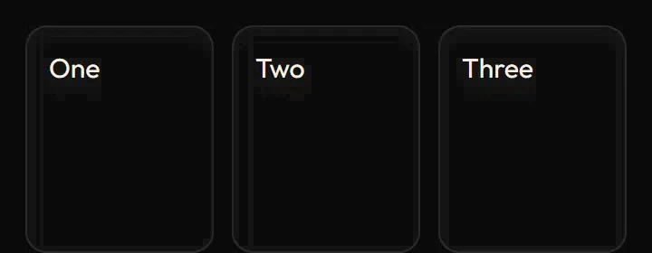
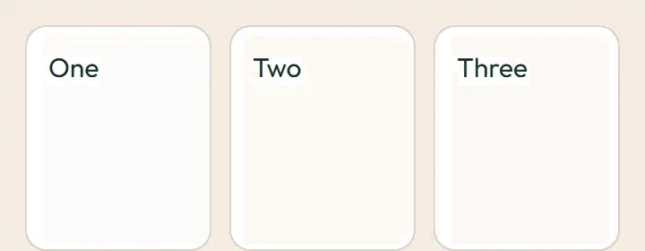
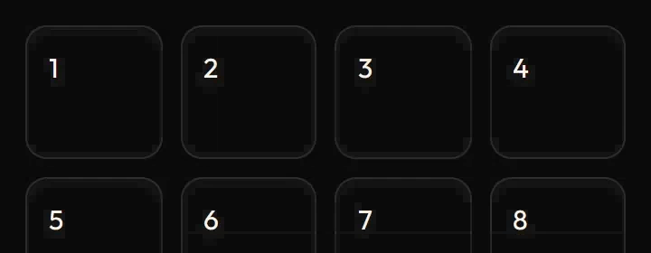
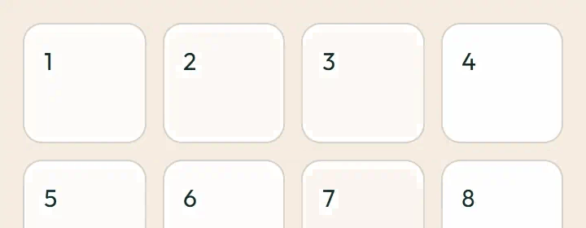

Page enter
Replay each entrance. The stagger moves the first eight cards 30 ms apart; the showcase cards rise in turn; the area panel wipes in. Under prefers-reduced-motion: reduce the motion is removed and the end state shows at once.
Stagger (sw-stagger)
1
2
3
4
5
6
7
8
Showcase cards (sw-auth-showcase)
Card one
Card two
Card three
Areas panel (sw-hub-area-panel)
Area panel: wipes in top to bottom
Image previews
Static posters are shown first. Play starts an animated image; Pause restores its poster. Reduced motion keeps posters visible.



